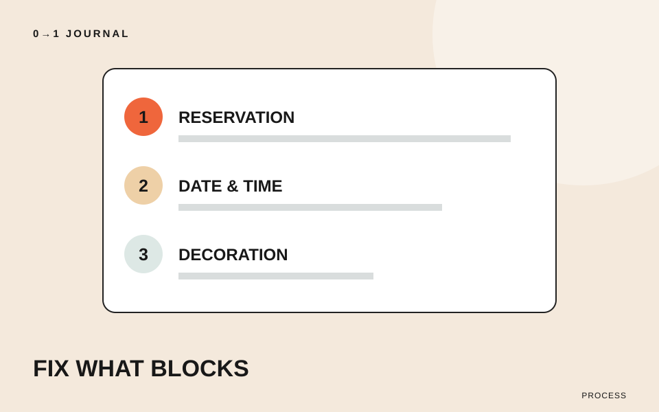
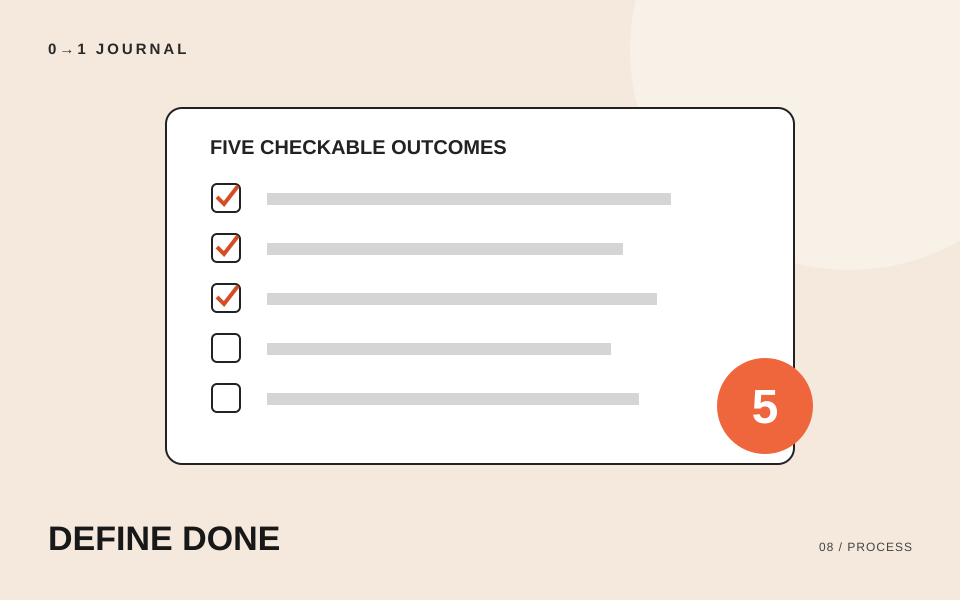
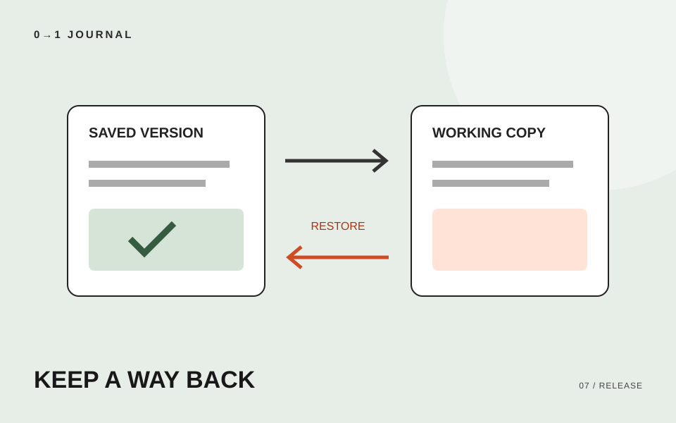
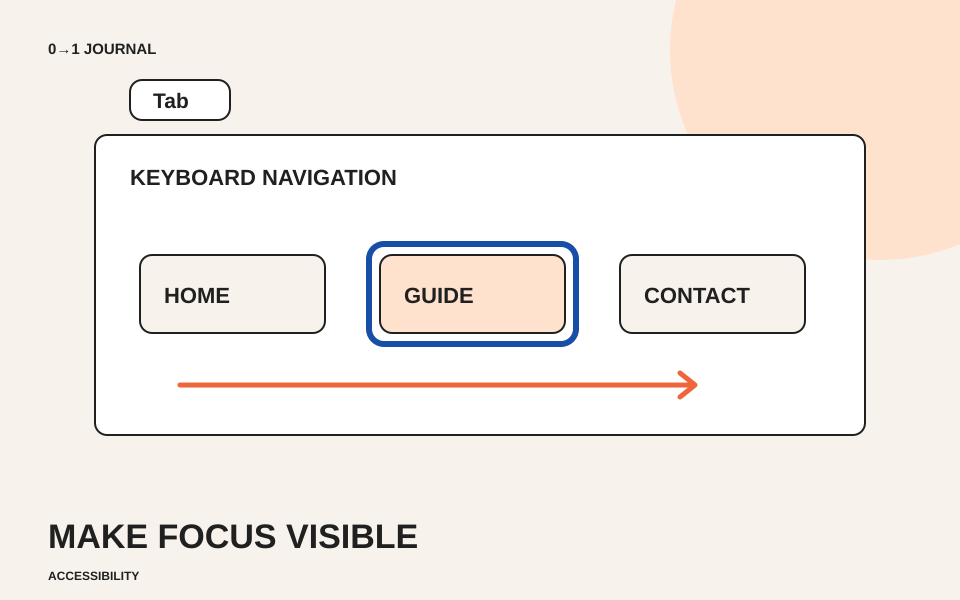
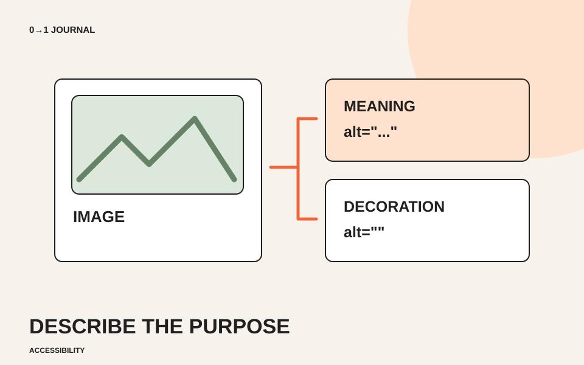
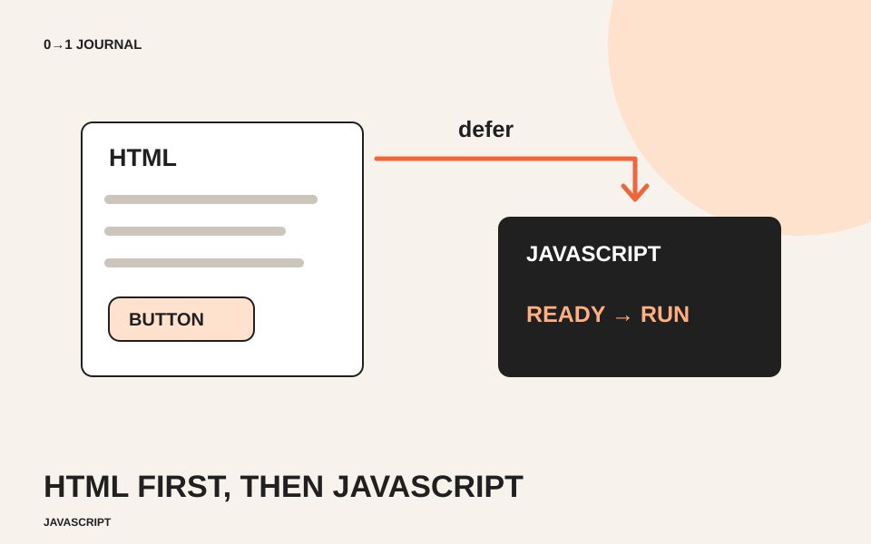
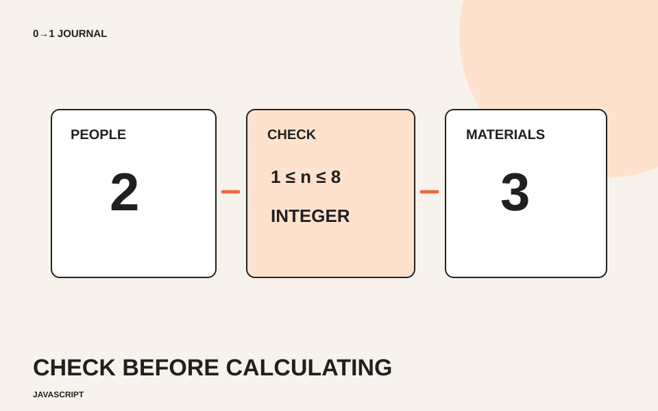
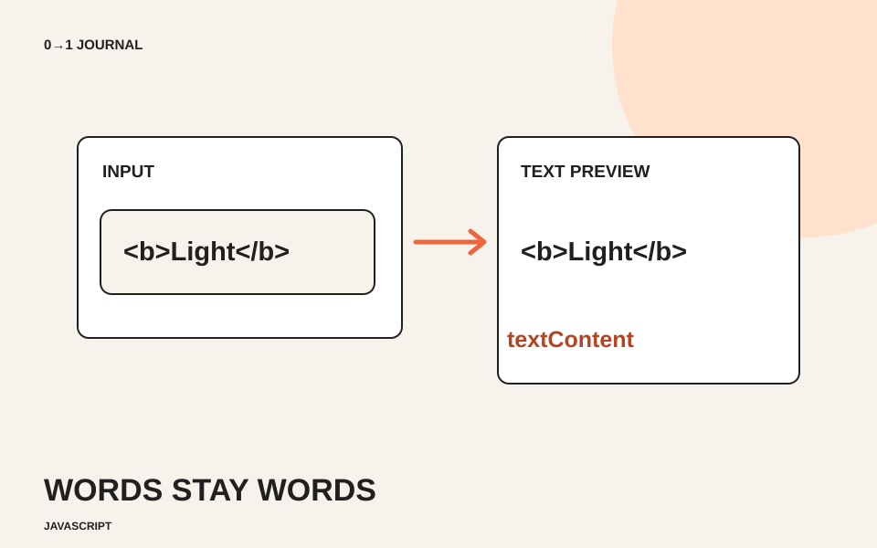
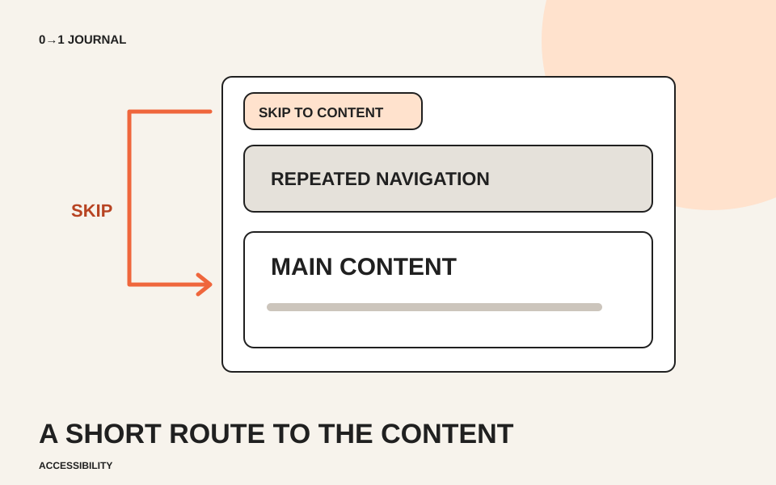

ページごとに違うボタンを、役割からそろえる方法
同じ予約への入口なのに、ページごとに色や形が違う。架空の貸しスタジオサイトを例に、操作の役割を棚卸しし、共通の見た目と例外を短いルールにまとめます。
#UIデザイン #ボタン #一貫性
LEARN. MAKE. PUBLISH.
ホームページ制作の「どうしよう」を、
一つずつ。学び方からデザイン、コード、
公開後のことまで。
FIRST STEP / はじめに読みたい
コードを書く前に、誰に何を伝えるサイトなのかを整理する。目的・読者・情報・導線・公開後の確認を、一つずつ考えます。
記事を読むLATEST NOTES
同じ予約への入口なのに、ページごとに色や形が違う。架空の貸しスタジオサイトを例に、操作の役割を棚卸しし、共通の見た目と例外を短いルールにまとめます。

写したコードを説明できるか確かめたい人へ。架空の写真展示のデータを使い、入力・条件・出力を言葉にし、予想と実行結果の違いから調べる箇所を絞る練習を紹介します。

placeholderだけで項目名を示すフォームを見直します。架空の読書会の入力欄を例に、labelとidの対応、入力後の表示、ラベルを押したときの動きを確認します。

リンクの不具合と見た目の調整が同時に見つかったとき、何から直すか。架空の演奏会サイトを使い、影響・代替手段・再確認の観点から修正順を決める練習です。

「見やすくできたら完成」では、修正を終える判断が曖昧になります。架空の展示会サイトを例に、目的を確認可能な完成条件へ変え、未達と追加要望を分ける方法を紹介します。

サイト更新の前に、何を保存し、どの状態へ戻すかを整理します。架空の写真家サイトを例に、保存対象の選び方と復旧用メモの作り方を紹介します。

色を付ける前に、読者の疑問に沿って情報の順番を決めます。架空の陶芸体験ページを題材に、配置案を2つ作り、選んだ理由を説明する練習です。

文字の大きさや装飾を増やす前に、情報のまとまりを余白で伝える。見出し・本文・カードの間隔を考える練習です。

コードを書く前に、誰に何を伝えるサイトなのかを整理する。目的・読者・情報・導線・公開後の確認を、一つずつ考えます。

ページを移動するならリンク、その場で操作するならボタン。迷いやすい使い分けを短いコード例で整理します。

誰の課題に、どんな判断で応えたのか。目的・担当範囲・改善の過程を伝える、作品紹介の書き方です。

表示できることと、使えることは別。リンク先、入力エラー、通知メールまで、公開前の確認項目をまとめました。

画面幅を狭くして終わりにしない。文字、画像、リンク、横スクロール、入力フォームを順番に確認します。

マウスでは使えるのに、Tabキーで進むと現在位置が見えない。架空の施設案内を例に、消された枠を見直し、focus-visibleで表示を付け、順方向と逆方向の操作を確認します。

すべての写真に詳しい説明を書くべきか迷ったら、画像の役割を確認します。架空の園芸教室を例に、情報を伝える写真、飾り、リンクの画像を分け、代替テキストを考える練習です。

HTMLにボタンがあるのにJavaScriptから見つからない。架空の工房案内を例に、ファイルの読み込み、idの一致、実行のタイミングを順に調べ、deferで直す手順を紹介します。

数字を入れたはずなのに結果がつながった文字になる。架空の工作会の材料数を例に、valueAsNumberで数値を読み取り、空欄・小数・範囲外を分けて扱う計算例を紹介します。

入力欄の文字をページに表示する小さなプレビューを作ります。架空の展示作品名を題材に、HTMLとして解釈させない表示方法、空欄の扱い、更新する範囲の決め方を確認します。

毎ページ同じメニューをTabキーで通る負担を減らすため、本文への入口を用意します。架空の地域資料館を例に、リンクと移動先の作り方、フォーカス移動まで含めた確認手順を紹介します。
別のキーワードやカテゴリで探してみてください。